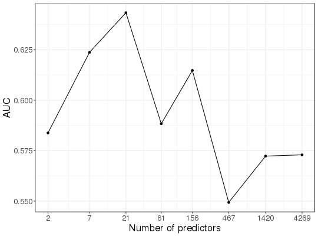

Polygenic Risk Scores with possible clumping and thresholding.
snp_PRS(G, betas, ind.test, ind.keep = cols_along(G), lpS = NULL, thr.list = 0)
<bigSNP>$genotypes).
You shouldn't have missing values in your data or SNPs with 0 MAF.-log10(p.value) associated with betas.
Default doesn't use thresholding.lpS at which SNPs are excluded if
they are not significant enough. Default doesn't use thresholding.A matrix of scores, where rows correspond to ind.test and
columns correspond to thr.list.
test <- snp_attachExtdata() G <- test$genotypes n <- nrow(G) m <- ncol(G) # get some phenotypes (LTM) set.seed(5) X <- attach.BM(G) M <- 100 # number of causal variants K <- 0.3 # prevalence ind.causal <- sample(m, M) betas <- rnorm(M, sd = sqrt(0.8 / M)) y.g <- drop(scale(X[, ind.causal]) %*% betas) rm(X) (v <- var(y.g))#> [1] 0.7538336y.e <- rnorm(n, sd = sqrt(1 - v)) (y01 <- as.numeric((y.g + y.e) > qnorm(1 - K)))#> [1] 1 1 0 0 0 1 0 1 0 0 0 1 1 1 0 1 0 0 0 0 0 0 0 0 0 1 1 0 0 0 1 1 0 0 0 0 1 #> [38] 0 1 0 0 0 0 0 1 1 0 0 1 0 1 1 1 0 0 0 1 1 0 1 0 1 0 0 1 1 0 0 1 0 0 0 1 0 #> [75] 0 1 0 0 0 0 1 0 0 0 0 0 1 0 0 1 1 0 0 0 0 0 1 0 0 1 0 1 1 1 0 0 0 0 0 0 0 #> [112] 1 1 1 0 0 0 0 0 0 0 0 0 0 0 0 0 0 0 1 0 0 0 1 0 1 0 0 1 0 0 1 0 0 0 1 1 1 #> [149] 0 1 0 0 1 1 0 0 1 0 0 0 1 0 0 0 1 0 1 0 0 1 0 1 0 1 0 1 1 1 0 0 0 0 0 0 0 #> [186] 0 0 0 1 1 0 0 0 0 0 0 0 0 0 0 0 0 1 1 0 1 1 1 1 0 0 1 0 0 0 1 0 0 1 1 0 0 #> [223] 0 0 1 0 0 0 0 1 1 0 1 1 1 1 1 1 0 0 0 0 0 0 0 0 0 0 0 1 0 0 0 0 0 1 1 1 0 #> [260] 0 1 1 1 1 1 1 0 0 0 0 0 0 0 0 1 0 0 0 0 1 0 0 0 1 0 1 1 1 1 0 1 0 0 1 1 0 #> [297] 1 0 0 0 0 0 0 0 0 0 0 0 0 0 0 0 0 0 0 0 0 0 0 0 1 1 0 0 0 1 0 0 0 1 0 0 0 #> [334] 1 0 0 0 0 0 0 0 0 0 0 1 0 0 1 0 0 0 0 1 1 0 0 1 0 0 1 0 0 1 0 0 0 0 0 0 1 #> [371] 0 0 1 0 1 1 0 1 0 1 1 1 0 0 0 1 0 0 0 1 0 1 0 0 0 0 0 0 0 0 0 0 1 1 0 0 1 #> [408] 0 0 0 0 0 0 0 0 0 0 1 0 0 0 0 1 0 0 0 0 0 0 0 0 0 0 0 0 0 0 0 0 0 0 0 0 0 #> [445] 0 0 0 0 0 0 1 0 1 0 0 0 0 0 0 0 0 0 0 0 1 0 0 0 0 0 0 1 1 1 0 1 1 0 0 1 0 #> [482] 0 1 1 1 0 1 0 0 0 0 1 1 0 0 0 0 0 0 1 0 0 1 0 0 0 0 1 0 1 1 0 1 0 0 0 0#> First phase of clumping at r2 > 0.2.. keep 4270 SNPs. #> #> Iteration 1: #> Computing SVD.. #> #> Converged!# train and test set ind.train <- sort(sample(n, 400)) ind.test <- setdiff(rows_along(G), ind.train) # 117 # GWAS gwas.train <- big_univLogReg(G, y01.train = y01[ind.train], ind.train = ind.train, covar.train = obj.svd$u[ind.train, ]) # clumping ind.keep <- snp_clumping(G, infos.chr = test$map$chromosome, ind.row = ind.train, S = abs(gwas.train$score)) # -log10(p-values) and thresolding summary(lpS <- -predict(gwas.train))#> Min. 1st Qu. Median Mean 3rd Qu. Max. #> 0.000019 0.129900 0.317300 0.456500 0.641400 3.584000thrs <- seq(0, 3.5, by = 0.5) nb.pred <- sapply(thrs, function(thr) sum(lpS[ind.keep] > thr)) # PRS prs <- snp_PRS(G, betas = gwas.train$estim, ind.test = ind.test, ind.keep = ind.keep, lpS = lpS, thr.list = thrs) # AUC as a function of the number of predictors aucs <- apply(prs, 2, AUC, target = y01[ind.test]) library(ggplot2) bigstatsr:::MY_THEME(qplot(nb.pred, aucs)) + geom_line() + scale_x_log10(breaks = nb.pred) + labs(x = "Number of predictors", y = "AUC")